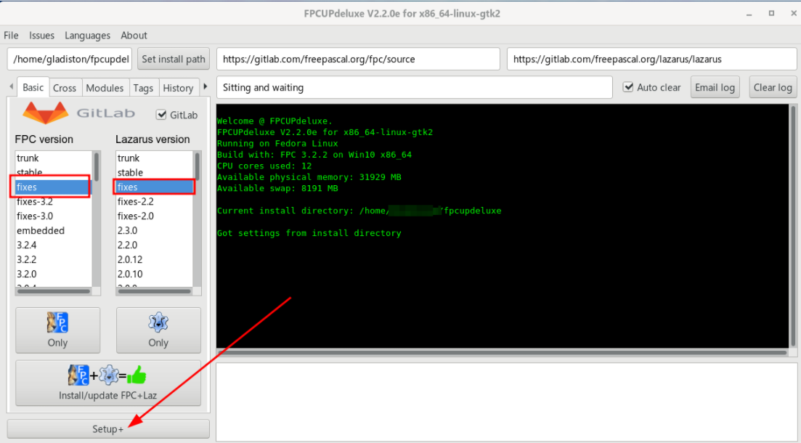
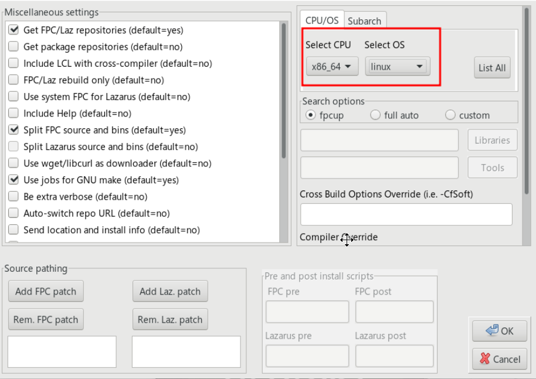

É mais simples uma instalação manual com o Lazarus+FPC, porque sua instalação será homeuser, isto é, podemos sem permissão especial instalar, configurar e usar. Nesta instalação, usaremos o fpcupdeluge para instalar o FPC e Lazarus no HOME do usuário. Primeiro vamos instalar alguns pacotes essenciais:
sudo dnf install make automake gcc gcc-c++ kernel-devel
sudo dnf groupinstall "Development Tools" "Development Libraries"
sudo dnf install gdb zip unzip gdb subversion binutils libX11-devel gtk2-devel gdk-pixbuf2-xlib
sudo dnf install cairo cairo-devel cairomm-devel
sudo dnf install pango pango-devel pangomm pangomm-devel
Se planeja compilar o FPC separadamente, então inclua:
sudo dnf install fpc fpc-src qt5pas-devel
Com o FPC instalado no seu sistema você apenas baixa ou compila o Lazarus sem essa dependência, o download e compilação no caso fpcdeluge será menor, e convenhamos, o FPC será algo que você não precisa modificar e deixá-lo instalado no sistema permitirá que a própria distro se encarregue de atualizá-la para você.
Há mais uma coisa a ser feita, ao executar programas construídos no Lazarus no ambiente Linux pode surgir a seguinte mensagem de dependência no terminal:
Gtk-Message: 00:00:00.000: Failed to load module "pk-gtk-module"
O programa executa normalmente, mas a falta dessa dependência pode indicar que algum aspecto visual não está como deveria ser, para corrigir o problema, execute:
sudo -i
echo "/usr/lib64/gtk-3.0/modulesexit" > /etc/ld.so.conf.d/pk-gtk.conf
echo "/usr/lib64/gtk-2.0/modules" > /etc/ld.so.conf.d/gtk2.conf
ldconfig
E a mensagem de dependência no terminal sumirá.
Visite a página:
https://github.com/LongDirtyAnimAlf/fpcupdeluxe/releases
O arquivo acima é um script, depois de baixá-lo, no terminal dê permissão de execução:
chmod +x fpcupdeluxe-x86_64-linux
./fpcupdeluxe-x86_64-linux
Não é necessário usar "sudo" porque essa será uma instalação homeuser, isto é, não vai requerer permissões administrativas.
Na tela seguinte selecione como FPC Version a opção fixes e para Lazarus version também fixes, depois clique em Setup+:
Depois faça o seguinte ajuste selecionando a plataforma que deseja compilar seus programas:
Depois confirme com o Botão OK e então em Install/Update FPC+Laz e prossiga com a instalação:
Então prepare-se, ela é bastante demorada. Após a conclusão com sucesso será gerado uma entrada no menu do sistema. Agora o Lazarus aparecerá no menu de pesquisa do ambiente GNOME.
Também foi gerado o arquivo Lazarus_fpcupdeluxe no pasta HOME do usuário. Se precisar executar o Lazarus por fora do menu padrão, então execute este script.